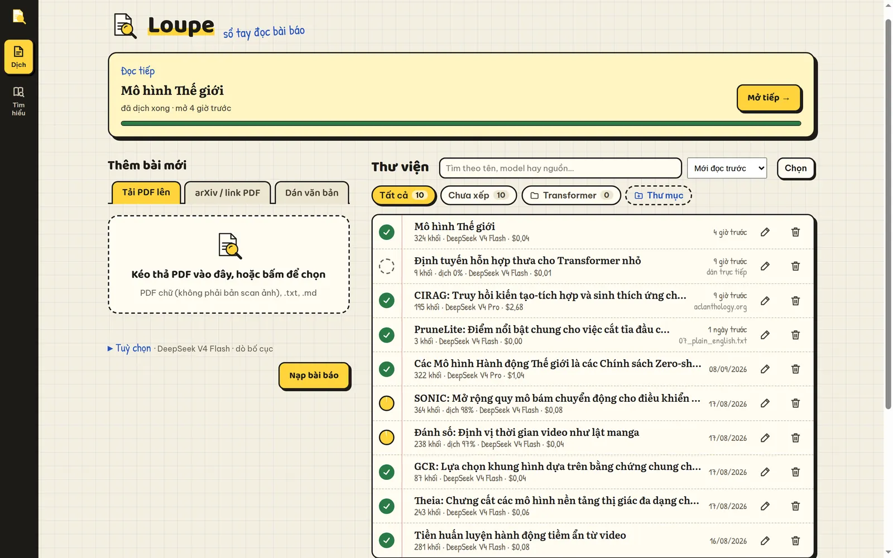
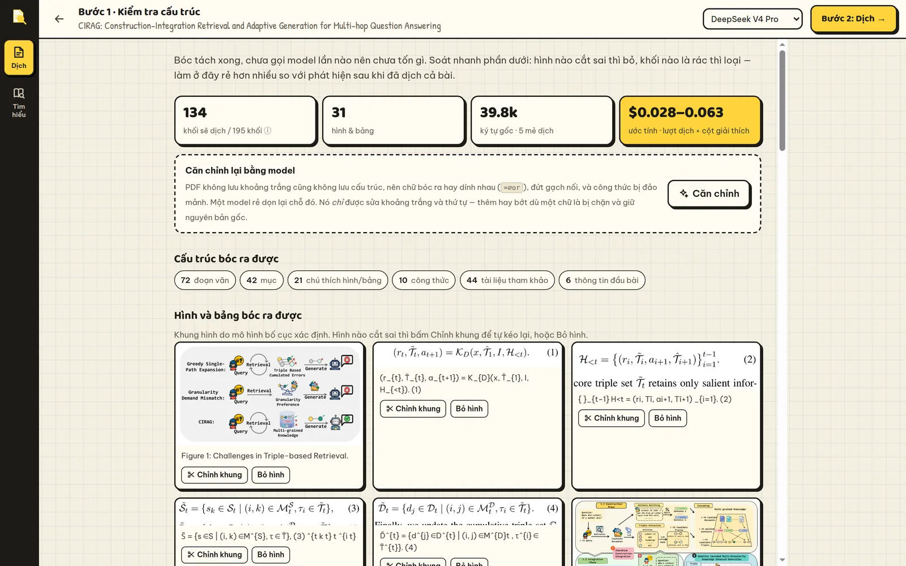
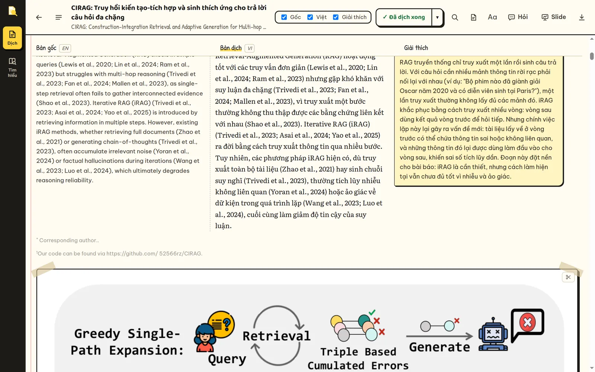
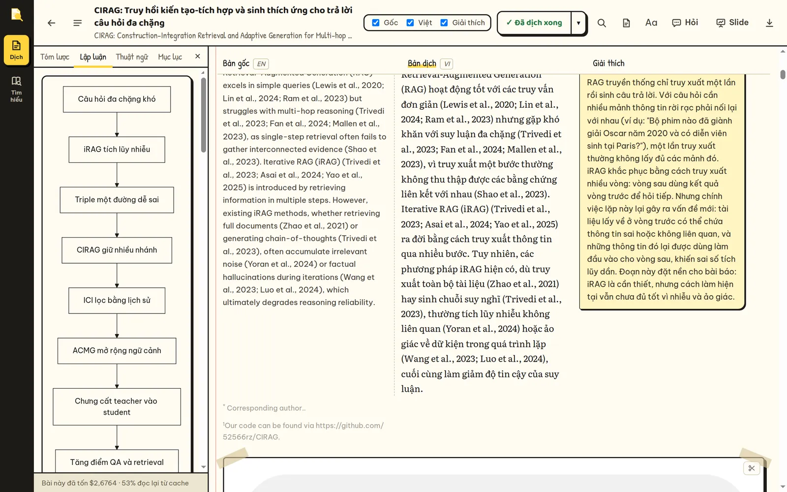
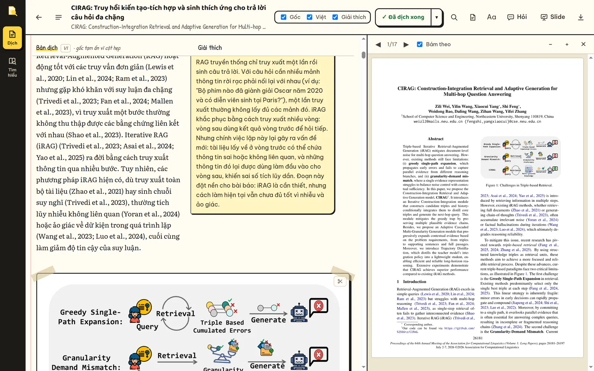
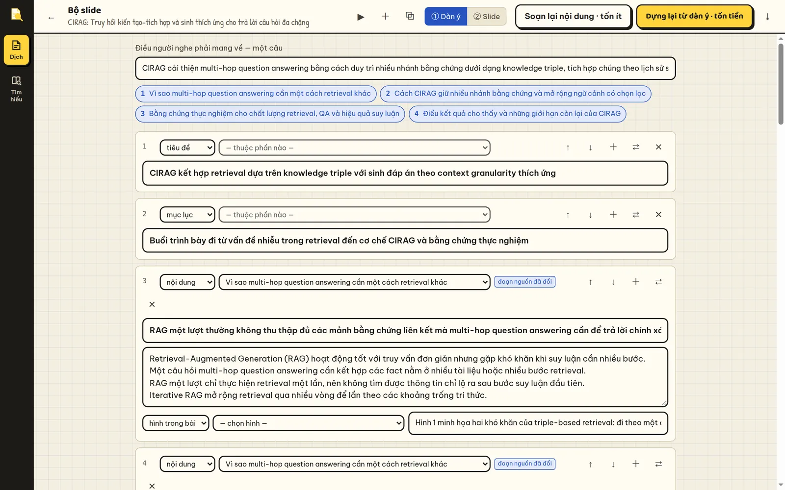
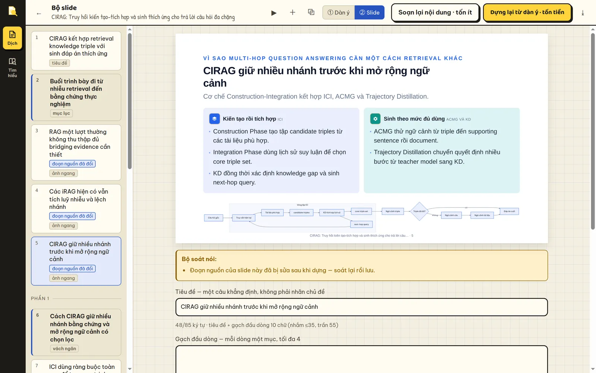
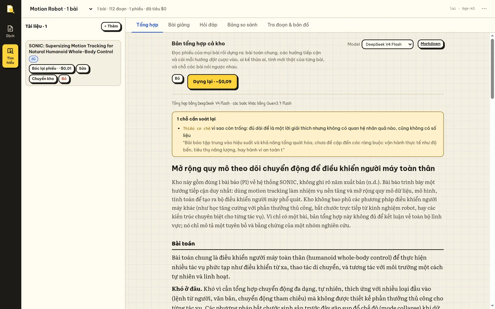
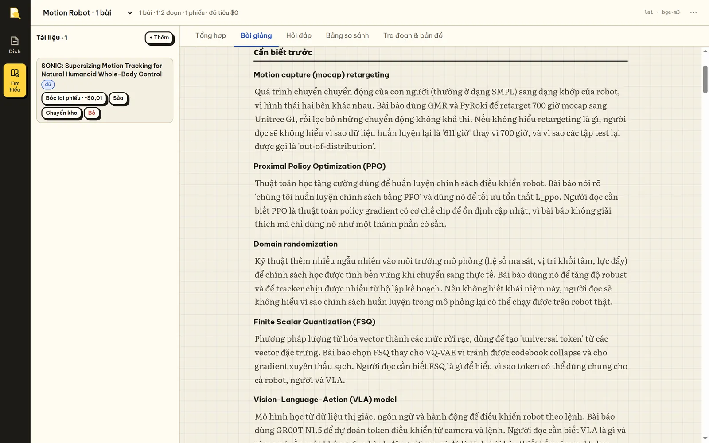

Hướng dẫn sử dụng
Từ lúc cài đặt tới lúc đọc xong một bài, làm slide trình bày, và hỏi cả một kho tài liệu. Đọc lần lượt nếu bạn mới dùng; nhảy theo mục lục nếu bạn cần tra một việc.
1Cài đặt
Bạn cần Python 3.10 trở lên và một key của OpenRouter — dịch vụ cho phép gọi nhiều model (DeepSeek, GPT, Claude…) bằng một key, trả tiền theo lượt dùng.
# lần đầu: tạo môi trường, cài thư viện, sinh tệp .env ./run.sh # mở tệp .env, điền OPENROUTER_API_KEY=sk-or-v1-…, rồi chạy lại ./run.sh # mở trình duyệt tại http://localhost:8010 (đổi cổng: PORT=9000 ./run.sh)
Tuỳ chọn: mô hình bố cục
Không cài gì thêm, Loupe vẫn bóc được bài bằng luật suy đoán. Cài thêm một mô hình bố cục thì hình, bảng và công thức hiển thị được nhận ra chính xác hơn hẳn và cắt thành ảnh. Khuyên dùng MinerU — nhanh, chỉ vài giây một bài:
.venv/bin/pip install "mineru[pipeline]"
Lần chạy đầu MinerU tải trọng số về (một lần). Muốn tắt hẳn: đặt
LAYOUT_BACKEND=off trong .env.
Thích Docker hơn? Làm theo
DOCKER.md —
nhớ đặt DOCKER_UID/DOCKER_GID trong .env.
2Nạp bài báo
Màn đầu có khung Thêm bài mới với ba cách nạp:
- Tải PDF lên — kéo thả file vào khung, hoặc bấm để chọn. Nhận cả
.txtvà.md. - arXiv / link PDF — dán mã như
1706.03762, linkarxiv.org/abs/…, hoặc link tới một file PDF bất kỳ. - Dán văn bản — dán thẳng nội dung bài. Hợp với bài đã có sẵn chữ.
Mở Tuỳ chọn nếu muốn đổi Model dịch trước, rồi bấm Nạp bài báo. Bước này miễn phí.

Nạp trùng một bài đã có
Loupe nhận ra cả hai trường hợp: cùng một file, và cùng một bài nhưng file khác (ví dụ bản arXiv v2). Nó hỏi trước khi làm gì, kèm số phần trăm đã dịch và số tiền đã tốn cho bản cũ:
- Mở bản đang có — không tạo thêm gì.
- Lưu thành phiên bản mới — bài mới mang nhãn v2, v3… cùng họ với bài cũ.
- Ghi đè bản cũ — bóc file mới vào bài cũ; đoạn nào không đổi thì giữ nguyên bản dịch, ghi chú và vệt bôi.
3Soát bước 1 — trước khi tiêu tiền
Đây là bước quan trọng nhất, và nó miễn phí. Bóc sai thì dịch hay đến đâu cũng hỏng, nên hãy nhìn qua trước khi bấm dịch.

- Cấu trúc bóc ra được — bao nhiêu đoạn, mục, chú thích, công thức. Mục tham khảo tự gác sang một bên, không dịch.
- Hình và bảng bóc ra được — hình cắt lệch thì bấm Chỉnh khung, kéo tám tay nắm rồi lưu; hình thừa thì Bỏ hình (giữ chú thích).
- Khối đáng ngờ — những khối trông như rác. Với mỗi khối: bỏ hẳn, bỏ tick để giữ mà không dịch, gộp với khối ngay sau (đoạn bị cắt đôi), hoặc tách làm hai (hai đoạn bị dính). Xem toàn bộ để làm vậy với mọi khối.
- Căn chỉnh lại bằng model — chỉ có với PDF. Dọn chữ dính nhau, gạch nối đứt, công thức đảo mảnh. Tốn rất ít, và model chỉ được sửa khoảng trắng và thứ tự: thêm hay bớt một chữ là bị chặn.
Đổi model ở góc trên thì giá ước tính tính lại ngay. Xong thì bấm Bước 2: Dịch →.
Nếu là PDF scan (ảnh chụp trang), Loupe không đọc được chữ — chạy OCR trước, ví dụ
ocrmypdf. Xem thêm ở Xử lý sự cố.
4Dịch
Trên thanh công cụ có ba ô tick Gốc · Việt · Giải thích. Chúng quyết định luôn bạn trả tiền cho cái gì: cột nào tắt thì không được sinh ra.
- Chỉ cần đọc nhanh: bật Việt, tắt Giải thích.
- Đọc kỹ, chưa vững nền: bật cả hai. Cột giải thích nói lại bằng lời thường và cho biết đoạn đó đóng vai trò gì trong lập luận.
- Bài vốn đã là tiếng Việt: Loupe tự tắt cột Việt, chỉ sinh cột giải thích.
Bấm Dịch. Lượt đầu tiên đọc toàn bài để dựng tóm lược, chuỗi lập luận và bảng thuật ngữ — mọi đoạn sau đó dịch theo đúng bảng thuật ngữ này. Rồi các mẻ chạy, ba mẻ một lúc; đồng hồ trên thanh trạng thái cho biết nó vẫn đang chạy.
Nút ▾ cạnh nút Dịch
- Model — đổi giữa chừng không dịch lại phần đã xong.
- Dịch kỹ — thêm một lượt soát lại bản dịch với bản gốc. Tốn thêm.
- Chọn mục — tick chỉ Phương pháp và Kết quả, bỏ qua phụ lục. Mỗi mục ghi sẵn số khối và số tiền đã tốn.
Bấm ⏸ Dừng: phần đã dịch được giữ nguyên. Lần sau bấm Dịch tiếp chỉ chạy phần còn thiếu — không bao giờ dịch lại thứ đã xong. Khi đã hết việc, nút ghi ✓ Đã dịch xong.
Dịch xong cả bài, Loupe tự đánh dấu câu đáng nhớ (tắt được trong cột trái). Mỗi vệt kèm một dòng nói vì sao câu đó đáng nhớ; màu cho biết loại: tím = luận điểm, xanh dương = cơ chế, xanh lá = số liệu, hồng = giới hạn, vàng = khái niệm. Chỉnh mật độ ở mục Mật độ đánh dấu: thưa, vừa, dày.
5Đọc và hiểu

Công cụ trên từng đoạn
Rê chuột vào một đoạn, cột công cụ nhỏ hiện bên phải:
| Nút | Làm gì | Giá |
|---|---|---|
| 💡 Giải thích | Đoạn này đang làm gì trong lập luận: ý chính, liên hệ với đoạn trước, ví dụ cụ thể, điều tác giả không khẳng định, một câu tự kiểm | ~$0,003 |
| ✎ Sửa tay | Sửa bản dịch. Bản sửa được nhớ, đoạn y hệt ở bài khác cũng dùng bản của bạn | miễn phí |
| ↻ Dịch lại | Dịch lại riêng đoạn này, khi bản dịch lỗi | tới ~$0,03 |
| ⊘ Ẩn | Đưa khối ra khỏi mạch đọc; hiện lại được từ thanh "đang ẩn" | miễn phí |
Cột trái
Nút ☰ mở cột trái với bốn thẻ: Tóm lược, Lập luận (sơ đồ chuỗi lập luận), Thuật ngữ (tìm được), Mục lục (bấm để nhảy). Chân cột ghi bài này đã tốn bao nhiêu.

Cột trái mở trên màn hẹp thì ba cột đọc sẽ chật; Loupe tạm ẩn cột gốc và nói rõ trên thanh tên cột. Đóng cột trái là cột gốc hiện lại.
Đối chiếu với bản gốc
- Nút 📄 mở PDF gốc bên phải, tự lật theo đoạn đang đọc. Kéo vách giữa để nới rộng; bấm đúp vách để về mặc định.
- Bấm chữ Figure 3 trong bài để xem hình: cuộn chuột phóng to, kéo để di, bấm đúp để nhảy giữa vừa-khung và gấp ba; nút ⤢ nới khung khi xem bảng nhiều số.
- Rê chuột vào
[12]để xem tài liệu được trích; bấm để mở danh sách tham khảo. - Cột giải thích nhắc tới đoạn "…" thì bấm vào là nhảy tới đoạn đó.

Hiển thị
Nút Aa: cỡ chữ, bề rộng cột, và giấy Sổ tay (sáng) hay Bản vẽ (tối). Loupe nhớ chỗ bạn đọc dở cho từng bài. Kéo chọn chữ chỉ dính đúng một cột, nên chép ra không lẫn ba thứ tiếng.
6Bôi vàng, ghi chú và hỏi
- Bôi — bôi đen một đoạn chữ, chọn một trong năm màu. Màu vừa dùng được nhớ cho lần sau.
- Ghi chú — bấm vào vệt bôi để viết ghi chú, như comment.
- Nhờ giải thích — trong ghi chú, nhờ model giải thích đúng đoạn đã bôi (~$0,003).
- Hỏi — nút Hỏi trên thanh công cụ mở khung chat với toàn văn bài trong ngữ cảnh. Hợp cho câu như "phần này khác gì cách làm của bài X?".
Lúc đó toàn văn bài còn nằm trong cache của nhà cung cấp. Để hôm sau mới bấm, mỗi lượt phải đọc lại cả bài ở giá đầy đủ.
7Làm slide thuyết trình
Dịch xong cả bài thì nút Slide mở khoá. Có hai bước, và bạn duyệt ở giữa:
- ① Dàn ý — bấm Soạn lại nội dung (tốn ít). Bạn nhận một câu thông điệp chính, các phần, và mỗi slide sẽ khẳng định gì, dựa vào bằng chứng nào. Sửa ở mức ý tưởng tại đây: viết lại khẳng định, đổi hình, sắp lại thứ tự.
- ② Slide — bấm Dựng lại từ dàn ý (tốn tiền hơn). Slide bạn đã sửa tay sẽ không bị dựng đè.

- Sửa chữ thẳng trên slide; ⤢ Bố cục tự do để kéo, đổi cỡ từng phần.
- Làm lại slide này — nhờ model viết lại riêng một slide.
- ▶ Trình chiếu (F5): ← → chuyển slide, S xem lời người nói, Esc thoát.
- Cờ đỏ trên slide nghĩa là chốt soát thấy vấn đề — ví dụ một con số không có trong đoạn nguồn. Đọc kỹ trước khi trình bày.

8Xuất file
Nút tải về (⤓) trên thanh công cụ:
- Markdown, HTML, PDF — song ngữ hoặc chỉ tiếng Việt. Ảnh được nhúng thẳng vào file, nên mở ở đâu cũng còn hình; file HTML đọc được offline, sơ đồ vẫn chạy.
- PDF đi qua hộp in của trình duyệt: chọn Lưu dưới dạng PDF.
- Bộ slide xuất được PDF, HTML, PowerPoint. Trong file PowerPoint, sơ đồ là hình vẽ gốc, vẫn kéo và sửa chữ được.
9Thư viện
- Đọc tiếp — thẻ trên cùng là bài bạn mở gần nhất.
- Con dấu ở lề — ✓ xanh là đã dịch xong, vòng vàng là đang dở, vòng nét đứt là chưa dịch.
- Tìm theo tên bài, tên model hay nguồn — gõ không dấu vẫn ra. Sắp theo mới đọc, mới nạp, tên, dịch nhiều nhất, chưa dịch xong, tốn tiền nhất.
- Thư mục — tạo thư mục, rồi kéo thẻ bài thả vào tai thư mục. Xoá thư mục không xoá bài: bài về "Chưa xếp".
- Chọn nhiều — nút Chọn, hoặc Ctrl/⌘ + bấm; Shift + bấm chọn cả dải. Chuyển thư mục có nút Hoàn lại; xoá thì hộp thoại kê tên bài và số tiền đã tốn cho chúng.
- Đổi tên — bút chì trên thẻ, sửa ngay tại dòng.
10Kho tài liệu — hỏi cả ba mươi bài
Bấm Tìm hiểu ở thanh bên trái. Đây là công cụ thứ hai: nó không dịch, mà đánh chỉ mục từng bài và tóm mỗi bài thành một "phiếu" để trả lời câu hỏi xuyên kho.
- Tạo kho — menu ⋯ → Tạo kho mới. Mỗi chủ đề một kho.
- Thêm tài liệu — nút + Thêm: nạp file, tìm bài theo từ khoá, hoặc lấy bài đã đọc trong phần Dịch.
- Bơm nội dung — mỗi bài tốn khoảng $0,034, một lần. Bóc, cắt đoạn và tìm kiếm theo nghĩa đều chạy trên máy, miễn phí.

| Thẻ | Dùng khi |
|---|---|
| Tổng hợp | Cần bức tranh chung: các hướng tiếp cận, chỗ các bài mâu thuẫn, khoảng trống còn bỏ ngỏ, nên đọc bài nào trước (~$0,09) |
| Bài giảng | Mở một bài lạ và chưa biết phải hỏi gì: kiến thức nền cần có, bài toán, cơ chế chạy tay một ví dụ, so sánh với các bài được trích (~$0,08) |
| Hỏi đáp | Có câu hỏi cụ thể. Mỗi khẳng định trích tới đúng đoạn; bấm mã trích dẫn để mở nguyên văn |
| Bảng so sánh | So các bài theo cột: phương pháp, dữ liệu, kết quả… Thêm bớt cột miễn phí |
| Tra đoạn & bản đồ | Tìm thẳng một đoạn văn, xem đồ thị thực thể nối các bài |

Vòng tìm kiếm tối đa năm lượt, kiểm ngân sách trước mỗi lượt gọi. Ý nào không tìm được bằng chứng sẽ được ghi thẳng là chưa tìm thấy, và các cảnh báo (số không có trong đoạn trích, trích dẫn không đỡ được câu…) hiện ngay dưới câu trả lời.
Đặt trần chi phí mỗi câu hỏi ở Tuỳ chọn & model trong thẻ Hỏi đáp. Hỏi lại đúng một câu khi kho chưa đổi thì miễn phí.
11Mẹo tiết kiệm tiền
- Soát kỹ bước 1 — ẩn khối rác trước khi dịch; mỗi khối là một lượt dịch và một lượt giải thích.
- Tắt cột không cần — cột tắt không được sinh ra.
- Dịch theo mục — bài 30 trang thường chỉ cần Phương pháp và Kết quả.
- Bấm 💡 trong lúc vừa dịch xong — cache còn ấm, rẻ hơn nhiều.
- Model mặc định đã đủ tốt cho đa số bài; model đắt hơn đáng tiền khi cần tiếng Việt thật mượt cho bài quan trọng.
- Dùng lại bộ nhớ dịch — đoạn đã dịch ở bài khác được lấy lại miễn phí.
12Phím tắt
| Phím | Ở đâu | Làm gì |
|---|---|---|
| Ctrl F | màn đọc | Tìm trong bài (cả ba cột) |
| Enter / Shift Enter | ô tìm | Kết quả sau / trước |
| ← → | vách khung PDF | Nới hoặc thu khung (giữ Shift để bước lớn) |
| F5 | màn slide | Trình chiếu toàn màn hình |
| S | đang trình chiếu | Xem lời người nói |
| Ctrl/⌘ + bấm | thư viện | Chọn nhiều bài |
| Ctrl Enter | hộp nhập nhiều dòng | Đồng ý |
| Esc | mọi nơi | Đóng hộp thoại, thoát chế độ chọn |
13Xử lý sự cố
"Không trích được nội dung — PDF có thể là bản scan"
PDF chỉ chứa ảnh chụp trang, không có chữ. Chạy OCR trước:
ocrmypdf vao.pdf ra.pdf, rồi nạp file ra.pdf.
Báo "⚠ Bóc bằng đường lùi" / công thức không thành ảnh
Mô hình bố cục không chạy được, Loupe đã dùng luật suy đoán. Cài MinerU (xem Cài đặt), rồi trong bài bấm Bóc lại từ PDF (miễn phí) ở cột trái — bản dịch, ghi chú, vệt bôi đều giữ nguyên.
Đoạn văn bị cắt đôi, hoặc thứ tự đọc lộn xộn
Bài nạp từ phiên bản Loupe cũ hơn giữ nguyên cách bóc cũ. Bấm Bóc lại từ PDF để dùng bộ bóc mới nhất; đoạn không đổi giữ bản dịch, chỉ đoạn vừa được nối lại cần dịch lại. Còn sai thì sửa tay ở bước soát: gộp, tách, ẩn khối.
Ảnh hình bị mờ hoặc ô ảnh trống
Bấm Cắt lại ảnh cho nét (miễn phí) ở cột trái. Nó vẽ lại ảnh từ PDF gốc, không chạm vào chữ hay bản dịch.
Đứng mãi ở "Đang đọc toàn bài để dựng tóm lược…"
Đồng hồ trên thanh trạng thái phải đang chạy. Nếu model không trả lời, Loupe tự thử lại một lần rồi báo quá giờ và hỏi Thử lại. Thử lại vẫn hỏng thì đổi sang model khác ở nút ▾. Bấm ⏸ Dừng huỷ ngay, phần chưa sinh ra không bị tính tiền.
Bản dịch có chữ lạ (Hán, Cyrillic…)
Thỉnh thoảng model lẫn hệ chữ khác. Loupe đánh dấu khối đó; bấm ↻ để dịch lại riêng đoạn ấy, hoặc ✎ để sửa tay. Bản lỗi không được ghi vào bộ nhớ dịch.
Kho tài liệu chỉ tìm theo từ khoá, không theo nghĩa
Máy chưa tải được model vector (khoảng 2,3 GB, tải ở lần dùng đầu). Kiểm
EMBED_BACKEND=auto trong .env và kết nối mạng. Không có GPU vẫn chạy
được trên CPU, chỉ chậm hơn.
Docker: "unable to open database file"
Container không ghi được vào ./data. Thêm DOCKER_UID=$(id -u)
và DOCKER_GID=$(id -g) vào .env, rồi
docker compose up -d.
Mở localhost:8010 không được
Cổng có thể đang bị chiếm. Chạy ở cổng khác: PORT=9000 ./run.sh, rồi mở
localhost:9000.